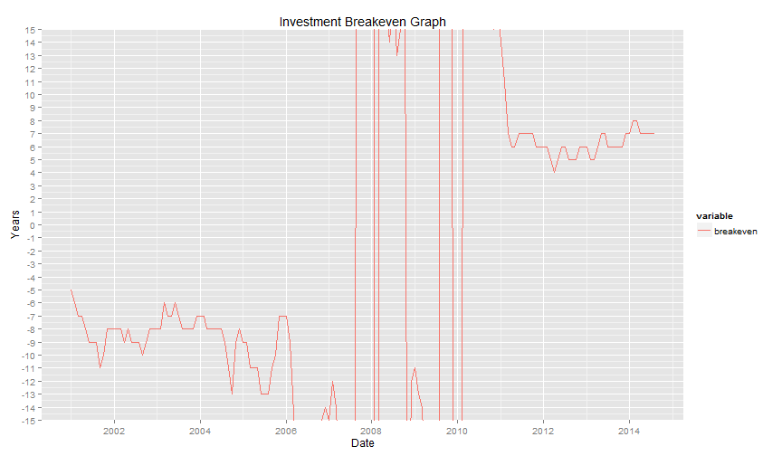

NGVBreakeven
Investment Breakeven For Compressed Natural Gas Powered Vehicles
Kumar Aiyer
Managing Partner, CleanFin LLC
Introduction
NGVBreakeven is a clould-based investment breakeven calculator for Compressed Natural Gas (CNG) powered vehicles. It provides a historical time series of how long it takes for an initial investment to payback based on the savings of using CNG fuel compared to Diesel based on historical data.
-> Calculator Inputs
- Vehicle Related Assumptions
- CNG Pricing Related Assumptions
-> Calculator Outputs
- Historical Graph of Fuel Prices
- Historical Graph of Investment Breakeven
- Data table
Using the Calculator
NGVBreakeven can be accessed via the web at https://cleanfinllc.shinyapps.io/ngvbreakeven/
-> Enter Vehicle Related Assumptions
- Vehicle Price
- Annual Mileage
- MPG of Diesel Vehicle
- MPG of CNG Vehicle (in Diesel Gallon Equivalent)
-> Enter CNG Pricing Related Assumptions
- Acquisition Marketing Costs
- Electric Compression Costs
- Mainteance Costs
- Capital Amortization Costs
Why NGVBreakeven?
There are key reasons to using NGVBreakeven as a screening tool to look at the economics of owning a CNG powered vehicle
- Uses publicly available data on fuel prices from U.S. Energy Information Administration (EIA)
- The calculator is dynamic and will update itself to get the latest pricing data
- The breakeven is calculated not only for current fuel prices but also historically back to 2001. The user can make a rational decision on the relative value of the investment by comparing the current breakeven with historical values
- Ease of use. Just point to the URL, enter your data and you are in business
Results
